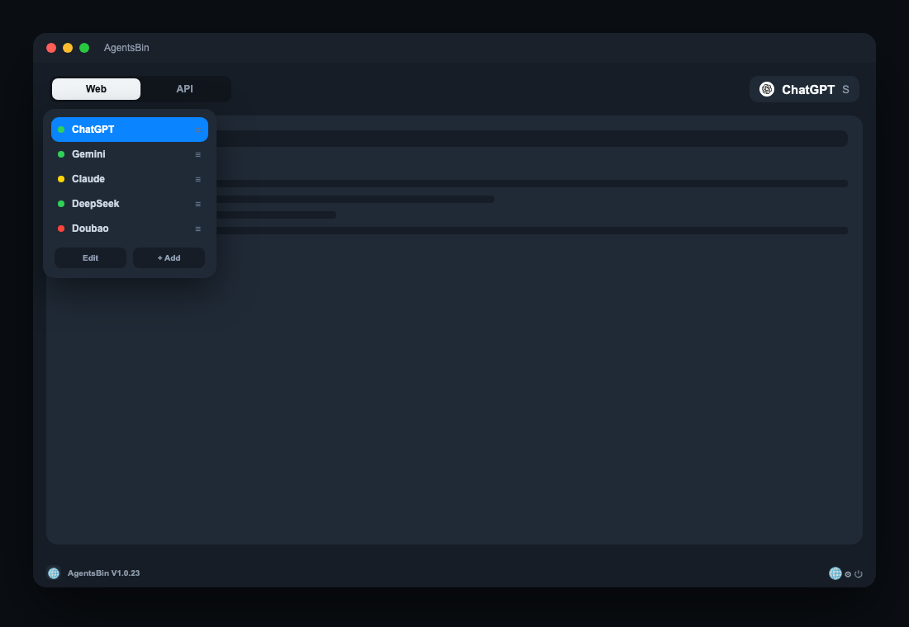
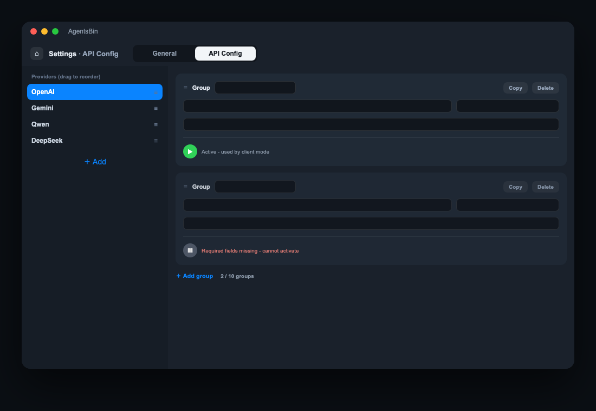

All your AI agents, one menu bar away
AgentsBin lives in the menu bar. Pick your default agents on first launch, then start chatting instantly — no tabs, no typing URLs.
Lives in the menu bar
Always one click away, always on top.
Instant popup
Click the menu bar icon and start chatting in seconds.
Manage your agents
37 mainstream agents, custom agents, drag-to-reorder sidebar.
No URL hunting
No typing website addresses or digging through bookmarks.
AgentsBin Analytics
Built-in agents
What's inside


Encrypted API key vault
Multiple API keys per provider, AES-encrypted locally, never uploaded.
37 cloud + 6 local agents
37 popular cloud AI agents and 6 local LLM apps, plus custom agents with drag-to-reorder.
10 languages
Full UI translations, switch anytime.
Appearance & launch
Dark/light mode and launch-at-login, all in one place.
Web & API chat
Chat in the official web page, or switch to API mode and call providers directly with your keys.
Free placement
A fixed floating capsule stays with the app on the same screen; click to expand, click again to minimize.
How to use
Open the DMG, drag AgentsBin to Applications, then click the floating capsule or the AB icon in the menu bar.
Open the agent list, pick an agent, and chat in Web or API mode. Local models are detected automatically.
Use Web mode in the official page, or API mode to call the provider directly with saved keys - including local models like Ollama.
Add custom agents, drag to reorder, switch language or appearance.
AI Chat Hub FAQ
Which AI agents does AgentsBin support?
37 mainstream AI agents including ChatGPT, Claude, Gemini, DeepSeek, Qwen, Kimi, Grok, Doubao, plus custom agents.
Can I chat with both the web page and the API?
Yes. Web mode opens the official chat page; API mode calls the provider directly with your own API keys and per-agent verification.
Is AgentsBin free?
The beta is free for macOS 13+. If you use your own API keys, providers may bill usage directly.
How are my API keys stored?
Keys are AES-encrypted locally on your Mac and never uploaded to the cloud.
Download AgentsBin
macOS 13+ · ~1.1 MB
SHA-256
009aea042993fc938729e1777316dbd35714797e9e6aa9e0511b1fde6891e660
Open the DMG and drag AgentsBin to Applications.